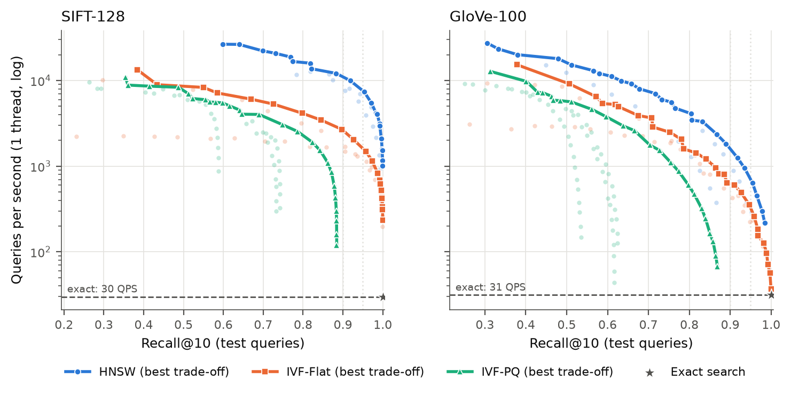
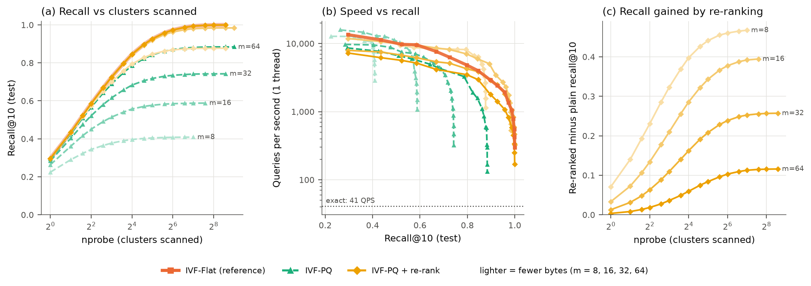
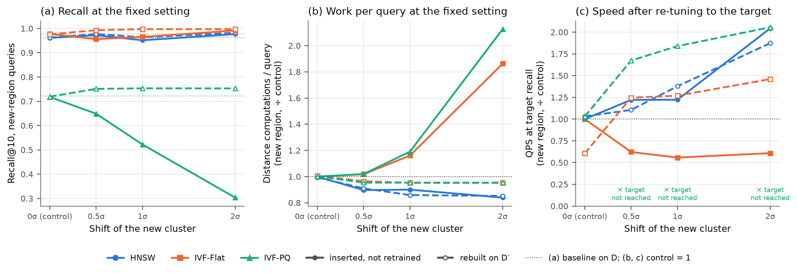

Machine. 13th Gen Intel(R) Core(TM) i5-13500 (14 physical / 20 logical cores, a hybrid CPU), 15.7 GB RAM,
Windows 11; Python 3.12.10, FAISS 1.15.1 (CPU), numpy 2.5.4, h5py 3.16.0, threadpoolctl 3.7.0,
matplotlib 3.11.2. Everything was run on this one machine by one command (bash run_all.sh),
which also rebuilds every table, figure and number in this report from results/results.csv.
Data and protocol. SIFT-128 (1,000,000 vectors, Euclidean) and GloVe-100 (1,183,514 vectors, angular).
GloVe vectors and queries are scaled to unit length, so squared L2 = 2 − 2·cos and Euclidean ranking equals angular ranking.
Settings are tuned on queries 0–4999; all reported numbers are on queries 5000–9999. Speed is queries per second (QPS),
one search() call per query, on one thread: FAISS's OpenMP pool and the BLAS pool are capped (BLAS
otherwise ignores FAISS's limit), and the process is pinned to the performance cores (logical CPUs 0–11),
since the OS otherwise migrates it between fast and slow cores. Each timing is the median of 3 repeats, each repeat
looping over the queries for at least 0.2 s after a warm-up; CPU time / wall time is stored with every row as a
check that only one core was busy (0.82–1.06 over all 672 Part 2 rows). Index builds and recall use all threads.
Exact search is FAISS IndexFlatL2. Recall@10 with ties. For a query let
d10 be the largest exact distance from the query to the ten ground-truth neighbours. A returned id is a hit if
its exact distance is ≤ d10(1 + 10−6): a vector exactly as far as the 10th neighbour is just as
correct as the one the file happened to list. Distances are recomputed in float64 from the raw vectors and never taken from
the index (IVF-PQ returns approximate ones that could slip under the threshold); repeated ids count once and −1 padding
counts as a miss. Unit tests cover a tie at d10, a vector just beyond it, many-way ties on an integer grid,
duplicates, padding, short result lists, a mis-ordered ground truth, and agreement with plain id overlap when there are no
ties.
Check against the file. Exact search reaches tie-aware recall 1.0000 (SIFT) and 1.0000 (GloVe) on all 10,000 queries. Plain id overlap gives 0.99935 on SIFT: 65 queries differ from the file only by swapping tied vectors (SIFT components are integers, so exact ties occur), which the tie rule correctly accepts; GloVe has none. Distances agree with the file to a relative error of 1.2e-07 (SIFT) and 2.6e-05 (GloVe, whose file stores cosine distance = our squared distance ÷ 2).
| Dataset | Single query, 1 thread | Batch of 5,000, 1 thread | Speed-up | Batch, all threads | vs 1 thread |
|---|---|---|---|---|---|
| SIFT (1,000,000 × 128) | 41.3 (24.2 ms) | 379 (2.64 ms) | 9.2× | 737 (20 thr.) | 1.9× |
| GloVe (1,183,514 × 100) | 43.2 (23.2 ms) | 340 (2.94 ms) | 7.9× | 500 (20 thr.) | 1.5× |
Table 1. Exact search QPS (mean latency). Batch = all 5,000 test queries in one call.
Why batching is 9.2× faster on one thread. A single query must stream the whole 488 MB matrix from DRAM to do about two floating-point operations per byte loaded, so it runs at memory speed (≈ 21 GB/s, about what one core can draw). A batch is computed as one matrix product (‖q‖² + ‖x‖² − 2·QXT, a BLAS sgemm): each block of base vectors is loaded into cache once and reused for thousands of queries, so the same 256 MFLOP per query run at ≈ 97 GFLOP/s, compute-bound. All threads add only 1.9× (SIFT) / 1.5× (GloVe), consistent with the cores sharing one memory system and the slower efficiency cores.
Grid. HNSW: M ∈ {8, 16, 32}, efConstruction 200, efSearch 10–1024. IVF-Flat: nlist ∈ {1024, 4096, 16384}. IVF-PQ: nlist ∈ {1024, 4096} with m ∈ {d/8 or d/5, d/4, d/2} 8-bit sub-quantisers (residual encoding). The search knob (efSearch / nprobe) rises in ×√2 steps (nprobe ≤ 1024) until tune recall ≥ 0.999, recall stops improving, or the index becomes slower than exact search (336 settings, 672 rows). A target is met by the fastest setting whose tune recall reaches it; the table reports that setting's test recall and QPS.

| Data | Index | QPS @0.90 (test recall) | Setting @0.90 | QPS @0.95 (test recall) | Setting @0.95 | Build (s) | Size (MB) | B / vec |
|---|---|---|---|---|---|---|---|---|
| SIFT | HNSW | 14,023 (0.918) | M=16, ef=32 | 8,246 (0.971) | M=32, ef=48 | 69.5 | 748 | 784 |
| SIFT | IVF-Flat | 3,103 (0.926) | nlist=4096, nprobe=32 | 2,331 (0.959) | nlist=16384, nprobe=96 | 244.8 | 504 | 529 |
| SIFT | IVF-PQ | – | – | not reached (max 0.884) | m=64, nlist=4096, nprobe=512 * | 77.7 | 71 | 74 |
| SIFT | Exact | 41.3 (1.000) | – | 41.3 (1.000) | – | 0.1 | 488 | 512 |
| GloVe | HNSW | 1,760 (0.918) | M=32, ef=192 | 889 (0.955) | M=32, ef=384 | 119.0 | 759 | 672 |
| GloVe | IVF-Flat | 815 (0.910) | nlist=16384, nprobe=384 | 357 (0.959) | nlist=16384, nprobe=1024 | 396.0 | 467 | 414 |
| GloVe | IVF-PQ | – | – | not reached (max 0.869) | m=50, nlist=4096, nprobe=1024 * | 66.4 | 67 | 59 |
| GloVe | Exact | 43.2 (1.000) | – | 43.2 (1.000) | – | 0.1 | 451 | 400 |
Table 2. QPS at recall 0.90 and 0.95, and the cost of the setting chosen at 0.95: build time (all threads), serialised index size and bytes per vector. * IVF-PQ never reaches 0.95; its most accurate setting is shown.
Why IVF-PQ fails to reach high recall (best 0.884 on SIFT, 0.869 on GloVe, with m = d/2). IVF-PQ ranks candidates by a distance computed from m-byte codes, and that approximation error is larger than the gap between the true 10th and 11th neighbours, so true neighbours are ranked just outside the top 10. Raising nprobe only adds more candidates ranked with the same error, so the curves turn vertical (Figure 1); more bytes per code raise the ceiling (SIFT m = 16: 0.588), and exact re-ranking removes it (Part 3).
Hypothesis (committed 0b6391d before any Part 3 code; informed by Part 2's plain IVF-PQ results):
(1) more sub-vectors m raise plain IVF-PQ recall and memory; (2) exact re-ranking of the top 100 raises recall at
every m, more at small m; (3) re-ranked recall stays below IVF-Flat, because re-ranking only reorders candidates and
cannot recover neighbours that were never retrieved; (4) re-ranking lowers QPS and needs the original vectors, whose
memory is counted.
Design. SIFT 1M, nlist = 4,096, m ∈ {8, 16, 32, 64}. Each IVF-PQ index is built once and searched plain
(control) and through FAISS IndexRefineFlat (top 100 by PQ distance, re-ranked by exact distance on the raw
vectors), at every nprobe. The reference is IVF-Flat with the same nlist, seed and training sample; its centroids are
identical to every IVF-PQ build, so at equal nprobe all three scan exactly the same clusters. We also record
coverage: the share of the true top 10 anywhere in PQ's top 100. Memory counts the raw vectors as held in RAM.

| m | B/vec plain | B/vec + re-rank | Best recall plain | Best recall re-rank | Gain @ nprobe 64 | Re-rank − IVF-Flat (worst) | QPS @0.95, re-rank |
|---|---|---|---|---|---|---|---|
| 8 | 18 | 530 | 0.409 | 0.877 | +0.460 | -0.123 | not reached |
| 16 | 26 | 538 | 0.588 | 0.984 | +0.377 | -0.016 | 2,298 (np=64) |
| 32 | 42 | 554 | 0.742 | 0.999 | +0.238 | 0.000 | 1,810 (np=48) |
| 64 | 74 | 586 | 0.884 | 1.000 | +0.103 | 0.000 | 1,074 (np=48) |
| IVF-Flat | 522 | – | 1.000 | – | – | 0 | 1,926 (np=48) |
Table 3. Per code size: bytes per vector, best test recall, gain from re-ranking at nprobe 64, the largest shortfall of re-ranked recall against IVF-Flat at equal nprobe, and QPS at recall 0.95.
Result. (1) Supported: best plain recall 0.409 / 0.588 / 0.742 / 0.884 for m = 8 / 16 / 32 / 64 at 18–74 B per vector. With m sub-vectors each 256-entry codebook covers d/m dimensions, so a larger m quantises finer. (2) Supported: re-ranking helps at every nprobe, by +0.460 at m = 8 down to +0.103 at m = 64 (nprobe 64); coarse codes misorder more candidates, so there is more to fix. (3) Supported as a bound: re-ranked recall equalled coverage on 69 of 69 settings and never exceeded IVF-Flat. For m ≥ 32 it matched IVF-Flat (within 0.001): PQ's top 100 already held every true neighbour in the scanned clusters, so only nprobe still mattered. For m = 8 the shortfall grows with nprobe (to -0.123): more candidates compete for 100 slots and coarse distances push true neighbours past rank 100. (4) Supported, but the costs are lopsided: re-ranking cost only 0.72–1.09× of plain QPS (100 exact distances are few next to scanning nprobe × ~244 codes), while memory jumps from 26 to 538 B per vector at m = 16 — as much as IVF-Flat (522 B). Not predicted: at recall 0.95 re-ranked m = 16 (2,298 QPS) was +19% against IVF-Flat (1,926 QPS); plain PQ is not cheaper per cluster here (m = 64 at nprobe 64: 855 vs 1,369 QPS), likely because lists of ~244 vectors make the per-list lookup-table set-up as costly as scanning raw vectors (not measured separately). Not tested: re-rank depth ≠ 100, other nlist, GloVe, raw vectors on disk.
Question and hypothesis (committed 81de567 before any Part 4 code). When a new cluster appears and is
simply inserted, how do the three indexes keep up, and does rebuilding recover? Predicted: at a fixed search setting,
larger shifts lower recall for at least one incrementally updated index, mainly for new-region queries; IVF-Flat crowds
new vectors into a few lists (imbalance, more candidates scanned); IVF-PQ is more sensitive because its codebooks are
also stale; HNSW's behaviour depends on how new nodes connect; rebuilding costs more maintenance time.
What we changed (one property). D = the first 400,000 SIFT vectors. The new cluster is the next
100,000 SIFT vectors (20% of the updated database D′) translated by s·σ·u, with u a seeded random unit
direction (the same for every s) and σ = 385 the RMS distance of D from its mean; s = 0 is the control (more
SIFT data, unmoved), s ∈ {0.5, 1, 2} are small, medium and large shifts (500,000 vectors in total). A translation
keeps every distance inside the cluster, so it is exactly as hard to search as SIFT; only its position relative to the
old data, and to anything an index learned from it, changes. Builds are fixed (HNSW M = 16; IVF nlist = 2,048;
PQ m = 32). Per index and shift we compare the baseline (built on D), incremental (a copy of the baseline plus
add() of the new vectors, no retraining) and rebuilt (trained and built on D′). Old-region queries are
SIFT queries; new-region queries are other SIFT queries moved with the cluster (even at the smallest shift
98.6% of their true neighbours are new vectors; 22.6% in the control). Each index keeps the
setting chosen on the baseline as the smallest reaching 0.95 × its best baseline recall (ef=48,
IVF-Flat nprobe=48, IVF-PQ nprobe=24, target 0.705).

| New-region queries, fixed setting | 0 (control) | 0.5σ | 1σ | 2σ | rebuilt, 2σ |
|---|---|---|---|---|---|
| IVF-PQ recall | 0.718 | 0.649 | 0.522 | 0.303 | 0.753 |
| IVF-PQ: PQ error new ÷ old | 0.99× | 2.60× | 8.94× | 55× | 1.05× |
| IVF-Flat recall | 0.978 | 0.956 | 0.965 | 0.992 | 0.997 |
| IVF-Flat distances / query | 13,474 | 13,718 | 15,638 | 25,100 | 12,829 |
| IVF-Flat QPS | 2,456 | 2,181 | 1,956 | 1,326 | 2,790 |
| IVF-Flat: lists holding 90% of new vectors | 1,511 / 2,048 | 1,337 / 2,048 | 907 / 2,048 | 240 / 2,048 | 316 / 2,048 |
| HNSW recall | 0.961 | 0.972 | 0.951 | 0.977 | 0.982 |
| HNSW: new nodes' links to new nodes | 27% | 93% | 99.9% | 100.0% | 100.0% |
What happened, and why. IVF-PQ breaks: new-region recall falls 0.718 → 0.649 → 0.522 → 0.303. A PQ code stores the residual (vector − nearest centroid) with codebooks learned on D's residuals; a shifted vector's residual from its distant nearest old centroid carries most of the shift, far outside anything the codebooks saw, so its reconstruction error is 2.6×, 8.9× and 55.5× that of old vectors and swamps the gaps between neighbour distances. Re-tuning cannot help (best new-region recall at any nprobe 0.680 / 0.536 / 0.304); rebuilding retrains centroids and codebooks (error 1.05×) and restores 0.753 at nprobe 12. IVF-Flat keeps recall but slows down: each new vector joins its nearest old centroid, on the edge of the old data; at the largest shift 240 of 2,048 lists hold 90% of the new vectors, the largest list grows 1,117 → 2,897 vectors (93% new) and imbalance rises 1.24 → 1.84. A new-region query probes these overloaded lists and scans 1.9× as many vectors (QPS 0.54×), but distances are exact and the neighbours sit together, so recall stays 0.992. Rebuilding gives the cluster its own ~316 lists: recall 0.997 at 2.1× the speed. HNSW barely changes (recall 0.951–0.977): it learns nothing that can go stale — each insertion is a graph search that links the new node to its nearest existing nodes, so a far cluster forms its own subgraph (99.9% of new nodes' links at 1σ stay inside it) joined to the old graph by only 1,906 level-0 links, which the greedy search still crosses. Rebuilding gains at most 0.012. Old-region recall stays within ±0.01 of the control for every index and state. Maintenance (inserting 100,000 vs rebuilding 500,000, all threads): IVF-Flat 0.4–0.7 s vs 9 s, IVF-PQ 1.2 s vs 37–39 s, HNSW 4.6–9.5 s vs 38–41 s.
Verdict. Supported: recall fell for an incrementally updated index, on new-region queries only (IVF-PQ); IVF-Flat crowding, imbalance and extra scanning all occurred and rebuilding removed them — but IVF-Flat's recall did not fall, which we did not anticipate; IVF-PQ was far more sensitive than IVF-Flat; HNSW was robust. Rebuilding is essential for IVF-PQ, worthwhile for IVF-Flat at large shifts, unnecessary for HNSW. Not tested: rotations or several clusters, a growing fraction of new data, deletions (FAISS HNSW cannot delete), other build settings, GloVe, query-only drift, partial retraining; HNSW links were measured on level 0 only.
Q1. Fastest at recall 0.95. HNSW on both: 8,246 QPS on SIFT (M=32, ef=48; 200× exact) and 889 QPS on GloVe (M=32, ef=384; 21×), ahead of IVF-Flat by 3.5× and 2.5×. The ranking does not change; the margin over exact search shrinks about tenfold. HNSW moves greedily towards the query through a neighbour graph, so most distances it computes are to vectors that really are close; IVF-Flat compares the query with every centroid and then scans whole clusters, most of whose members are not neighbours. GloVe needs far more work for the same recall (ef 384 vs 48, nprobe 1024 vs 96): word vectors are weakly clustered and a query's neighbours are only slightly closer than the rest of the data, so they spread over many IVF cells and greedy graph steps are less decisive.
Q2. Build time and memory. Bytes per vector follow from the structures: IVF-Flat = raw float32 + an 8-byte id (1.03× raw); HNSW adds 2M four-byte links on level 0 plus upper levels (656 B at M = 16, 784 B at M = 32 on SIFT; 1.3–1.7× raw for M ≥ 16); IVF-PQ stores m bytes + id (74 B at m = 64, 0.15× raw). Builds: IVF-Flat 4–21 s with nlist ≤ 4096 but 245 s at nlist = 16384 (k-means cost grows with nlist); HNSW 39–69 s, since every insertion is itself a graph search; IVF-PQ 32–78 s, mostly training m codebooks. PQ saves 85% of memory at m = 64 and is the only index here that would hold 108 vectors in 16 GB (7.4 GB), but gives up recall above ≈ 0.884 (Part 2), and the fix — exact re-ranking — needs the raw vectors back (Part 3).
Q3. What Parts 3 and 4 show, and when headline numbers mislead. (i) A single "IVF-PQ" curve hides two different limits: code precision (fixed by more bytes or re-ranking) and cluster coverage (fixed only by nprobe); with re-ranking the best code size changes. (ii) "0.15× memory" and "reaches 0.999" are each true of IVF-PQ, but not of the same index: the re-ranked one that reaches 0.999 needs 1.08–1.15× raw. (iii) Static benchmarks say nothing about updates: after a plain insert of drifted data, IVF-PQ's new-region recall fell from 0.718 to 0.303 while its old-region recall — what a benchmark on the original queries would show — did not move, and an average over all queries would dilute the drop. (iv) Equal recall can hide unequal cost: drifted IVF-Flat kept recall but ran at 0.54× the speed.
Q4. 150K or 10M vectors, 100 ms per query, 16 GB. Exact single-query latency grows linearly with N (400K: 11.4 ms, 500K: 14.4 ms, 1,000K: 24.2 ms; ≈ 20.9 ns per vector). 150K: exact search takes ≈ 6.6 ms or less (15× under budget) and 73 MB: use exact search — recall 1, nothing to tune or rebuild. 10M: exact search would take ≈ 212 ms, over budget, and the raw vectors already need 5.1 GB. Use HNSW with M = 16–32 (6.6–7.8 GB, which fits) and efSearch tuned on held-out queries: at 1M it needs 0.12 ms per query at 0.95 on SIFT and 1.13 ms on GloVe, leaving room to raise ef as N grows. If the data drifts, plan rebuilds only for IVF indexes (Part 4). Batched exact search on all threads (~14 ms per query extrapolated) would meet the budget for throughput but not for single-query latency. These are extrapolations from ≤ 1M vectors on this machine.
Q5. Two ways this benchmark could mislead (both tested). (1) Speed varies between runs; recall does not. 67 settings (SIFT IVF-Flat and IVF-PQ, nlist 4096) were measured in Part 2 and re-measured in Part 3: recall was identical for 67 of 67, but the QPS ratio had median 0.81 and range 0.72–1.00. Only differences well beyond that spread are meaningful (e.g. HNSW vs IVF-Flat), and close calls between IVF-Flat settings are not. (2) Hidden parallelism and core placement. During development (DESIGN_NOTES D13–D25), a "1-thread" batch actually used 3.3 cores (BLAS ignored the FAISS limit), the OS moved runs between fast and slow cores (1.8× spread between repeats), idle OpenMP workers spinning after a parallel step slowed the next 1-thread timing by 24%, and millisecond repeats were below timer resolution; each is fixed, and every row records CPU/wall as evidence. Also: per-call Python overhead (~2.6 µs) compresses the fastest HNSW numbers slightly; not tested: k ≠ 10, other hardware, batched or multi-threaded serving.
AI use is declared in ai_log/ai_statement.md. Code, results and hypotheses (with commit
history) are in code/; design decisions are in code/docs/DESIGN_NOTES.md.